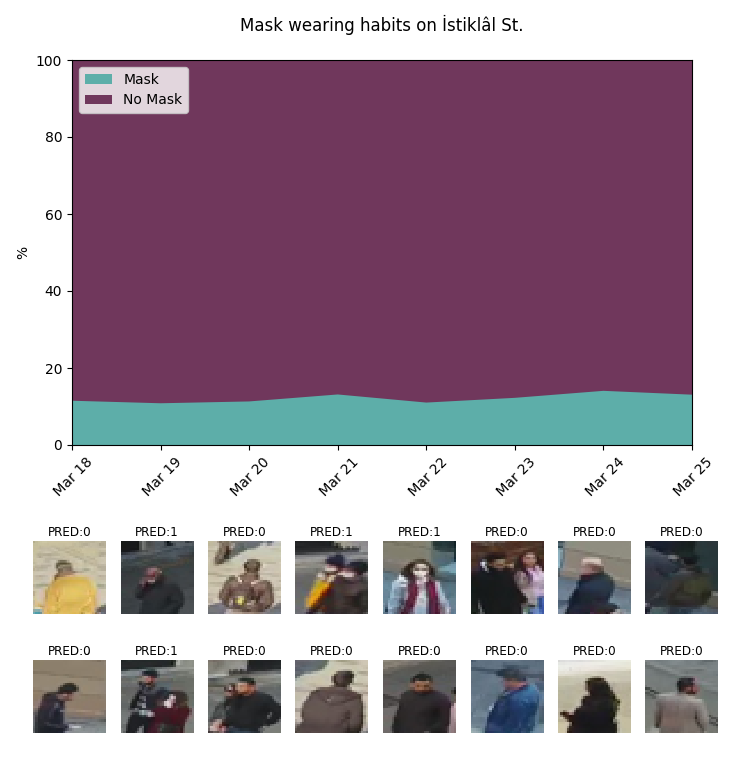
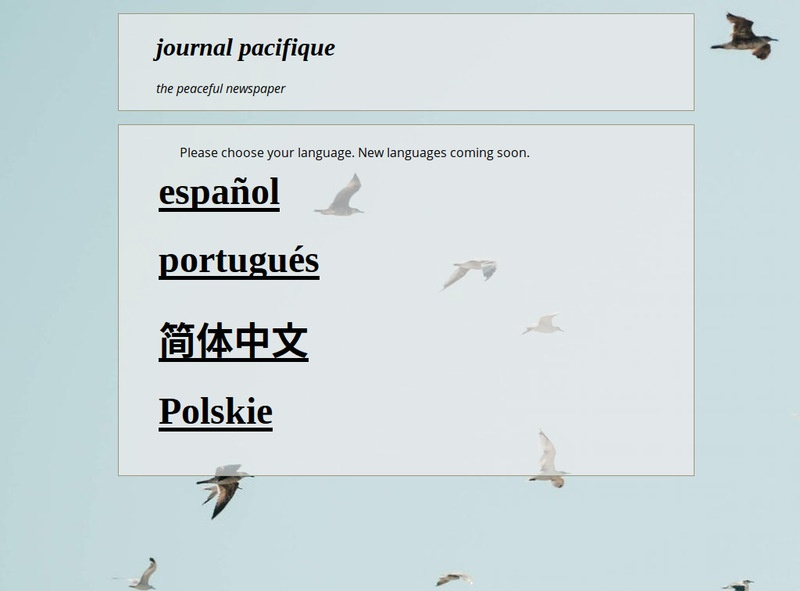
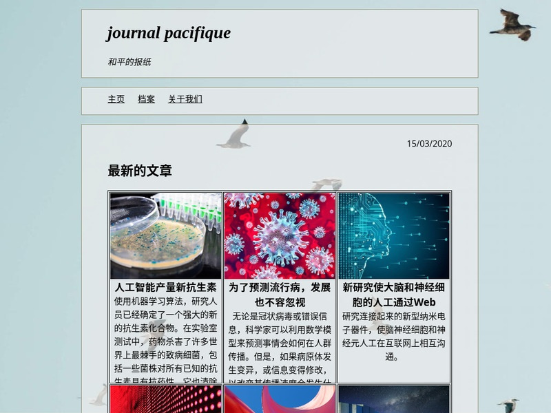
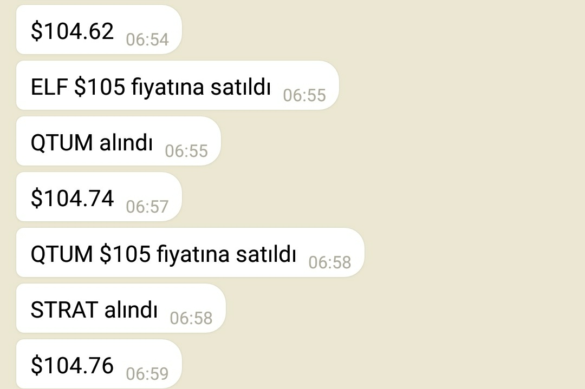
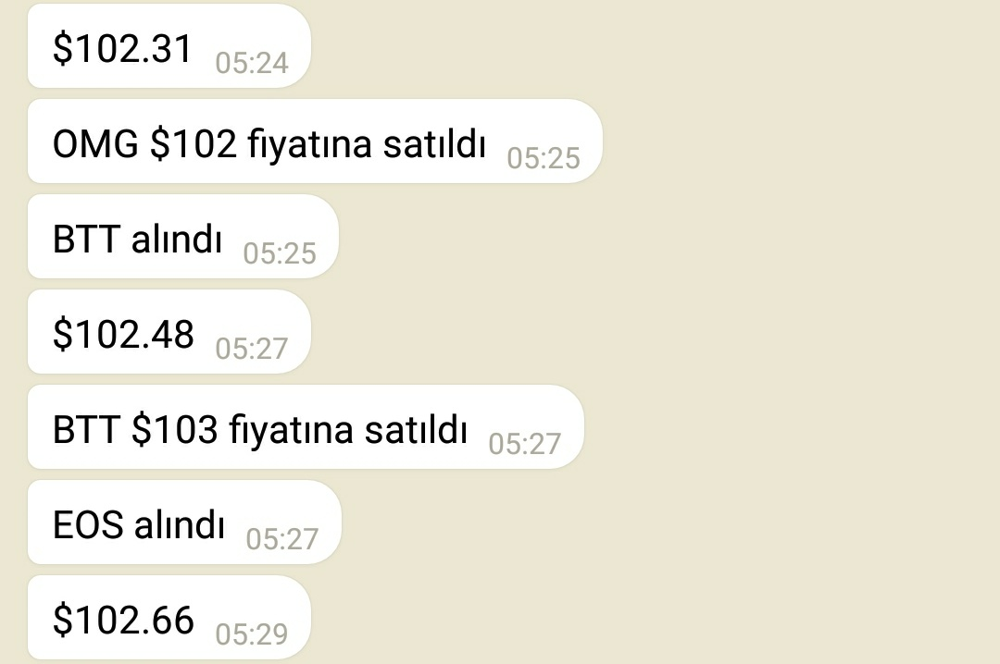
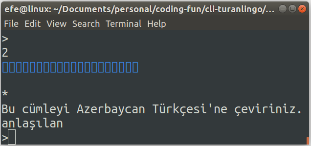
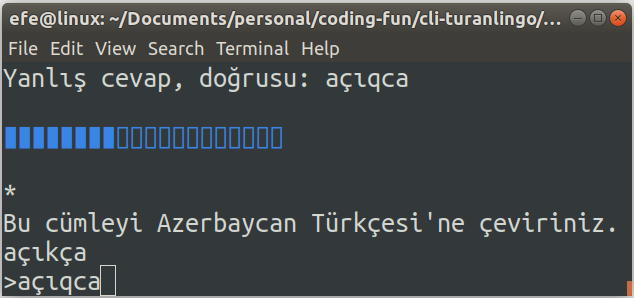

|
|
Cemre Efe KarakaşHome | Projects | Misc | Log |
|
|---|
|
|
Cemre Efe KarakaşHome | Projects | Misc | Log |
|
|---|
People started wearing masks in Istanbul during the coronavirus outbreak. After I realized this, I wanted to track what percentage of people were wearing masks and since I had a lot of time in my hands due to my school getting cancelled, I took on this personal project.
I used OpenCV to detect people in a video stream provided by İBB (the metropolitan municipality of Istanbul). I saved the people detected in the last minute and when new detections arrived, I compared them with the saved images to avoid duplicates.
After collecting around 10,000 images, I needed to label them to train my mask detection model. So I wrote a simple GUI annotation tool to label images and save their labels into text files in csv format.
I normalized the data for training by upsampling the number of masked individuals to speed up the learning at the beginning and slowly decreased the magnitude of normalization until I reached the point where I was training with the original dataset.
I wrote a simple script that parses all images from their paths (seperated by dates), predicts labels for all of them and plotting the change in the percentage of masked people in the population.
The project was time consuming and fun and it has helped me gain a lot of hands on practice. I am also quite happy with the data I was able to get from this project.
|  |
|---|
This is the latest project I worked on, and I could say its my favorite so far. The reason for this is probably how it connects to vision. I had always wanted to work with image to image models.
This was the first group project I led and I am pretty happy about the results.

|

|
|---|
In this project, we tried to see how Andrew Ng's trigger-word-detection model would perform well for laboratory earthquake predictions.
Turns out it was not the best model for this problem, but we have learnt a lot during the process. It was my first Deep Learning project, and we worked with a really big dataset (of around 610 million points).
typ-o is a simple js-based web application that allows you to type in the standard Russian Cyrillic input method, while highlighting the keys you press.
I wrote it on a thursday night after I couldn't find one that highlighted the pressed keys and was frustrated.
I plan to implement a simple game-based practice mode too, that's future work. (done!)
UPDATE: I made typ-v, which has a game mode. It does not have a virtual keyboard support (i found it quite limiting, and hard to make cross-platform compatible.)
I wrote a python script that parses royalty free science articles and translates them to different languages. The script then forms all html files (for all languages and all articles) and publishes them on the website.
The idea is to make the information on those websites be easily accessible for as many people in their own languages without the need of third party software.
I choose the languages carefully, I have evaluated the highest bard-scored languages, then among them, I chose four languages with the lowest rate of ESL speakers among their respective native speakers.
|  |  |
|---|
PyCrypt was a fun project I picked up during summer 19. The idea for PyCrypt was to create a bot that started with $100 of fake money, and tried to increase its amount by trading cryptocurrencies.The program scrapes more than 40 cryptocurrencies' prices every two minutes and decides what to to with its current porfolio (sell this buy that / hold).
The bot is essentially a Jupyter Notebook and works on simple trading principles like the 3 bar play or the four bar play instead of making use of ML/AI models. It also has an integrated telegram bot that updates me on the total worth of the portfolio every two minutes.
My plans for this project are switching to a data-science based approach and implementing the bot to take inputs from telegram to be manually manipulate the portfolio
|  |  |
|---|
I want to make a duolingo-like android application for language learning. I figured I would first code something to work on the command line interface in Java to begin with. So far, I haven't moved up to the Android phase but its still in the planning.
|  |  |
|---|